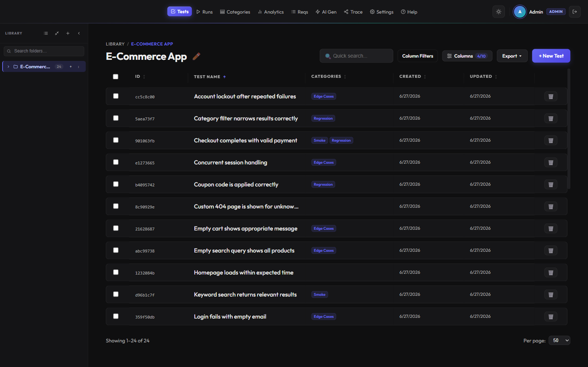
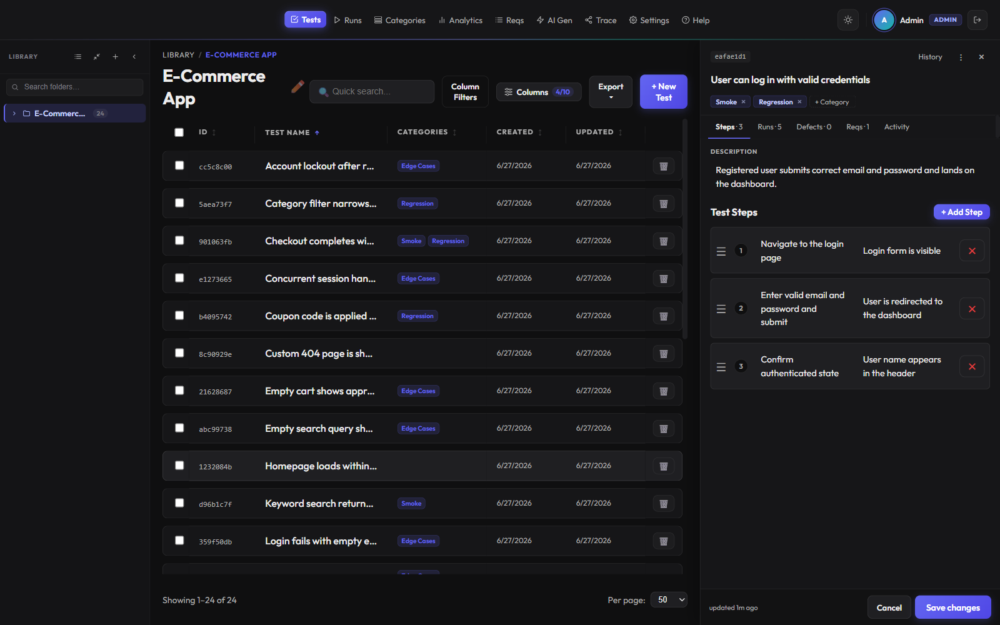
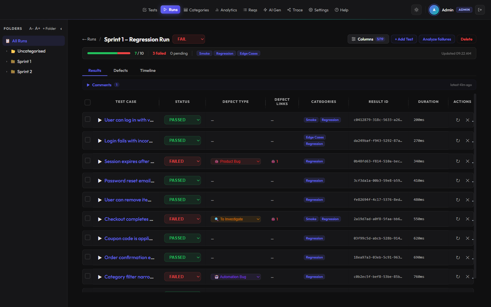
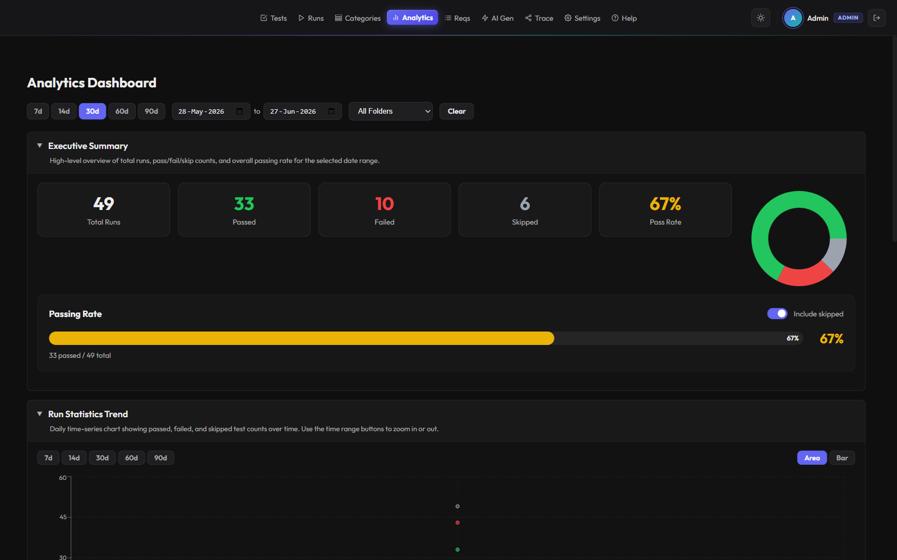
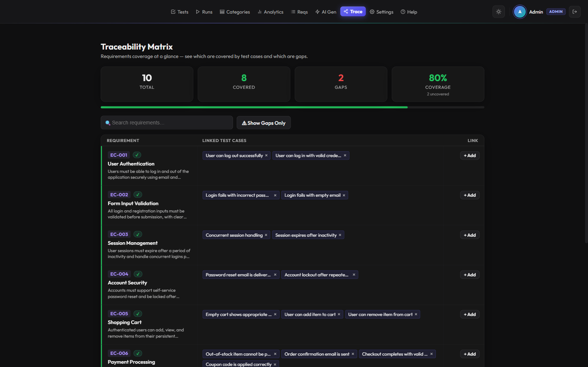
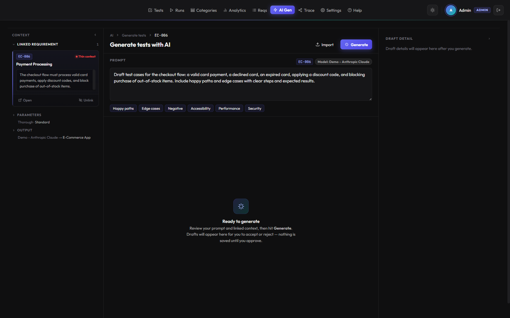

🏠
Self-hosted — own your data
Runs entirely on your infrastructure as a single Go binary and one SQLite file. Source-available under PolyForm Shield — no per-seat SaaS bills, nothing leaving your network.
Self-hosted · Source-available
TTGO is a modern, self-hosted test management platform — rich test cases, run execution, analytics, AI test generation and a first-class CLI, all running as a single Go binary against one SQLite file. Own your data, automate everything.

Runs entirely on your infrastructure as a single Go binary and one SQLite file. Source-available under PolyForm Shield — no per-seat SaaS bills, nothing leaving your network.
Draft test cases from requirements using your own LLM provider (bring your own key). A review-and-approve flow means nothing is saved until you accept it.
A first-class ttgo CLI drives tests, runs and analytics from the terminal or CI — and a bundled Claude Code skill lets you operate TTGO in plain English.
WebSocket-powered live sync keeps every open tab and teammate up to date as runs are executed and test cases change.
Everything teams expect from commercial test management — without the per-seat bill or the data leaving your network.
TipTap rich-text descriptions, ordered steps with expected results, and full version history with a diff view. Tabs for runs, defects and linked requirements keep everything in one place.

Snapshot-based runs with per-result pass/fail, defect classification (product / automation / system), defect links, durations and comments. Group results live by status, AI verdict or error signature.

Pass-rate trends, flaky-test detection, slowest tests, component health and side-by-side run comparison across any date range — so you know where quality is actually moving.

A coverage-at-a-glance matrix links requirements to test cases and surfaces the gaps. Import requirements from Jira or Confluence and keep traceability honest.

Pick a requirement for context, describe what you want, and let your configured model draft test cases for review. Nothing is saved until you approve it — your key, your data.

Against popular commercial and self-hosted test management tools.
| Capability | TTGO | TestRail | Xray | qTest | Kiwi TCMS | Qase |
|---|---|---|---|---|---|---|
| Self-hosted / on-prem | ✓ | ~ | ~ | ✓ | ✓ | ~ |
| Source-available / open source | ✓ | ✕ | ✕ | ✕ | ✓ | ✕ |
| Free to self-host (no per-seat license) | ✓ | ✕ | ✕ | ✕ | ✓ | ✕ |
| Built-in AI test generation | ✓ | ✓ | ✓ | ✓ | ✕ | ✓ |
| First-class CLI | ✓ | ✓ | ✕ | ✕ | ~ | ✓ |
| REST API | ✓ | ✓ | ✓ | ✓ | ~ | ✓ |
| Webhooks / push notifications | ✓ | ✓ | ~ | ✓ | ~ | ~ |
| Requirements & traceability matrix | ✓ | ✓ | ✓ | ✓ | ~ | ✓ |
| Native Jira integration | ✓ | ✓ | ✓ | ✓ | ✓ | ✓ |
✓ yes · ~ partial, paid-tier-only or caveated · ✕ no
Competitor capabilities are summarized from public documentation as of mid-2026 and change frequently — verify current details with each vendor.
One Go binary, one SQLite file, a React front end. Easy to run, easy to trust.
Clone the repo, drop in your admin credentials, and bring it up with Docker.
# clone & configure
git clone https://github.com/runetsk/ttgo.git && cd ttgo
cp .env.example .env # set ADMIN_EMAIL and ADMIN_PASSWORD
# build & start (served on port 80)
docker compose up -d --build